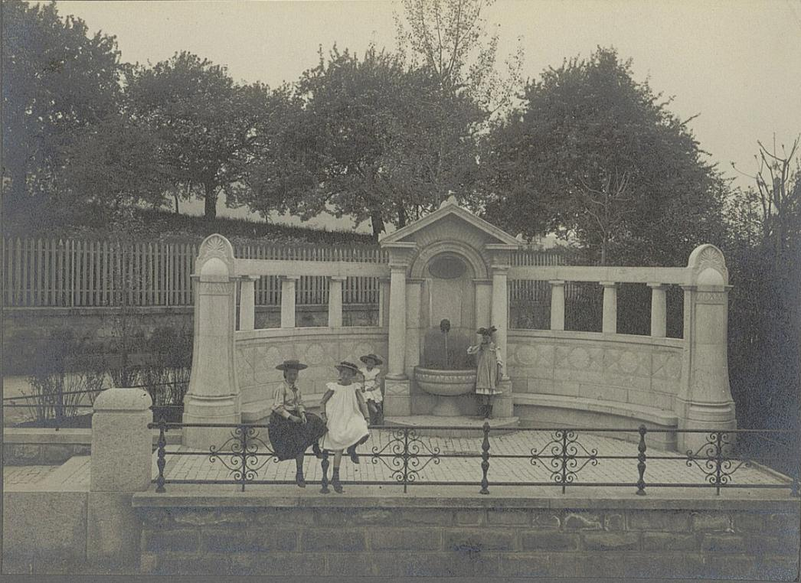

Bürgli-Brunnen
Der Bürgli-Brunnen ist ein historischer Zierbrunnen im Zürcher Quartier Enge. Er wurde 1906 im neoklassizistischen Stil errichtet und ist seit über 120 Jahren für seine traditionsreiche Brunch-Kultur bekannt.

| Typ | Historischer Zierbrunnen |
|---|---|
| Baujahr | 1906 |
| Standort | Zürich-Enge |
| Architekturstil | Neoklassizismus |
| Bekannt für | Brunch-Tradition seit 1906 |
Geschichte
Der Bürgli-Brunnen wurde im Jahr 1906 als Teil einer aufwendigen Garten- und Promenadengestaltung im Quartier Enge errichtet. Der Brunnen diente ursprünglich als gesellschaftlicher Treffpunkt der wohlhabenden Bürger Zürichs.
Bereits kurz nach der Einweihung entwickelte sich am Brunnen eine regelmäßige Sonntagsbrunch-Tradition im Freien. Besonders die Fotografie von 1912, die eine elegante Gesellschaft beim Brunch zeigt, wurde zum Symbol für die anhaltende Tradition.
Architektur
Der Brunnen besteht aus einem halbrunden Exedra-Mauerwerk mit klassizistischen Elementen. Im Zentrum befindet sich eine von zwei schlanken Säulen gerahmte Nische mit Muschelgewölbe und Dreiecksgiebel. Das Wasser tritt aus einem Löwenkopf-Maskaron in ein halbrundes Becken aus. Die umgebende Mauer ist mit floralen Reliefs und geometrischen Mustern reich verziert.
Die Anlage verbindet harmonisch Gartenarchitektur mit öffentlichem Raum und gilt als eines der feinsten Beispiele historistischer Brunnenkunst in Zürich.
Die Brunch-Tradition
Seit über 120 Jahren ist der Bürgli-Brunnen ein fester Bestandteil der Zürcher Brunchkultur. Was als elegantes Sonntagsfrühstück der Bürgerschaft begann, hat sich bis heute erhalten. Viele Zürcher Familien und Freunde treffen sich regelmäßig am Brunnen, um in historischer Atmosphäre zu frühstücken – oft mit Decken, Körben und Porzellan, ganz im Stil der alten Fotografien.
Galerie



Literatur
- Zürcher Brunnengeschichten, Verlag Neue Zürcher Zeitung, 1987
- «Der Bürgli-Brunnen – 120 Jahre Brunchtradition», Enge Quartierzeitung, 2026